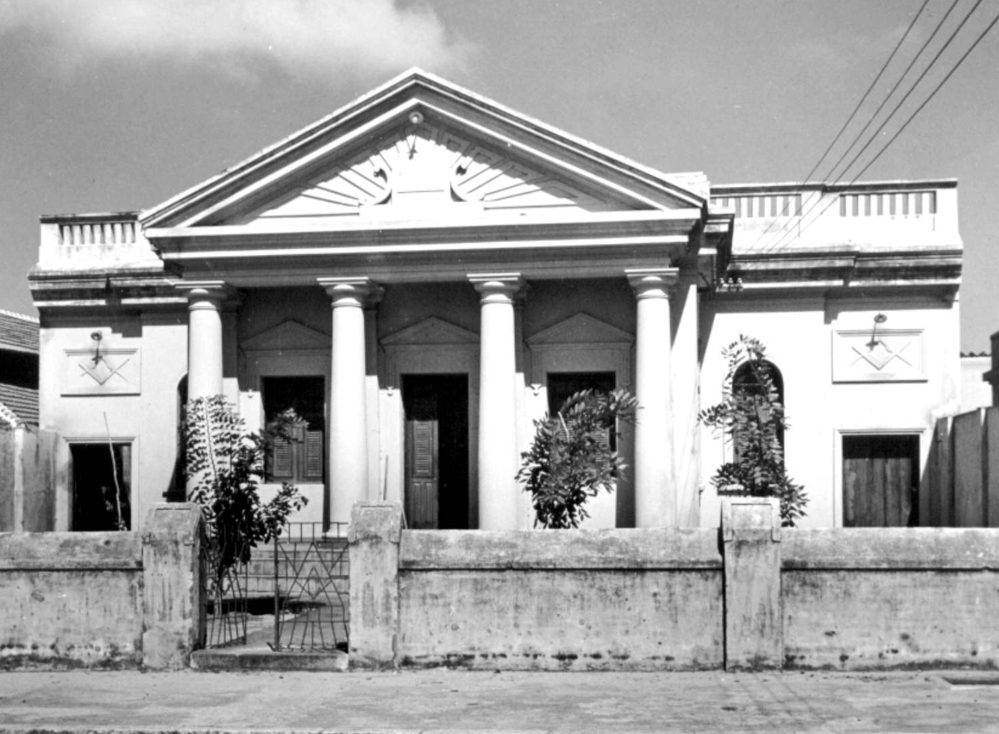

Maçonaria no Ceará A Fraternidade Cearense é uma loja maçônica do Ceará. Foi a primeira loja regular, tendo sido organizada com registro de 1 de dezembro de 1859 junto ao Grande Oriente do Brasil sob número 136. Em 1937 foi uma das lojas fundadoras do Grande Oriente do Brasil Ceará. A loja opera pelo Rito Escocês Antigo e Aceito. Vários intelectuais, políticos e pessoas proeminentes fizeram parte dessa loja tais como Araripe Júnior, João Brígido, João Cordeiro, José Liberato Barroso, Justiniano de Serpa, Manuel Moreira da Rocha, Tomás Pompeu de Sousa Brasil, Nogueira Acioly, Gonçalo de Lagos Fernandes Bastos, Joaquim Mendes da Cruz Guimarães e Dario Telles de Menezes, fundador da Ypióca. Já em 1873 a publicação "Almanak da Província do Ceará" listava membros da loja com o seu grau. Naquele ano, alem do Venerável Antônio Mendes da Cruz Guimarães, os outros membros com 33º Grau eram: João Brígido, José Dias Macieira, e José Liberato Barroso. Existe outra Loja "Fraternidade Cearense" filiada à Grande Loja Maçônica do Ceará. Essa loja foi criada em 1991 sob número 106. Casimiro Ribeiro Brasil Montenegro foi iniciado em 1899 na Fraternidade Cearense nº 106 foi um dos fundadores, em 1905, e primeiro Venerável da Loja Porangaba nº 2, uma das lojas fundadoras da Grande Loja Maçônica do Ceará. Antes da Fraternidade Cearense, mas sem regularidade com as obediências do Brasil, surgiram algumas lojas: em Aracati no ano de 1833;[8] em Fortaleza a loja "União e Beneficência" foi fundada por José Martiniano de Alencar e Diogo Antônio Feijó, quando da vinda de Alencar para tomar posse no governo do Ceará em 1834. A "regularidade" é uma característica importante das instituições maçônicas. No sentido estrito ao que tange às constituições da obediências. Nesse sentido a Fraternidade é a primeira loja regular na fundação. Seus membros fora muito influentes e a Loja irradiava novidade. Vários temas sociais foram discutidos por maçons da Fraternidade Cearense e ações sociais importantes foram protagonizadas pelos obreiros dessa loja no Ceará. Durante a Questão Religiosa foi fundado o jornal "Fraternidade" (entre 1873 e 1875) que era redigido por maçons em defesa dos ideais do Liberalismo, notadamente a separação entre Igreja e Estado. A Fraternidade Cearense foi muito ativa no combate às mazelas da Grande Seca de 1877. Seus membro realizaram vários eventos e noticiaram para os 'irmãos' maçônicos do Brasil que mandaram fundos e donativos diversos para diminuir o sofrimentos da população mais carente.Também foi muito ativa no movimento abolicionista do Brasil. Realizou vários eventos para arrecadação de fundos para pagar alforria de escravos. Grande Loja - Ceará  A Grande Loja Maçônica do Estado do Ceará foi fundada em 19 de março de 1928 por iniciativa das Lojas Deus e Camocim N°01, Porongaba N°02 e Fortaleza N°03. Regular de origem, recebeu a Carta Constitutiva N°09 exarada pelo Supremo Conselho do Grau 33 do Rito Escocês Antigo e Aceito da Maçonaria para a República Federativa do Brasil, com a denominação inicial de Grande Loja Symbolica Escoceza Soberana para o Estado do Ceará. É filiada a Confederação da Maçonaria Simbólica do Brasil. Buscando sempre a obediência aos postulados internacionais de regularidade, na origem e na prática, obteve o reconhecimento de suas co-irmãs do Brasil e das demais congêneres do mundo. A seleção de novos iniciados, o estudo filosófico, o cumprimento ritualístico e a participação nos eventos da comunidade maçônica nacional e internacional têm sido uma constante diretriz em seus trabalhos. Fiel ao princípio de Liberdade com responsabilidade defendeu a tese da total autonomia do simbolismo em relação ao filosofismo, o que ensejou a assinatura de tratado de mútuo reconhecimento com o Supremo Conselho, em 1935. Mantendo-se coerente aos princípios maçônicos sempre que o estado de direito no país foi ameaçado, defendeu a democracia e o voto universal, livre e secreto. Defendeu, sempre, a unidade das Grandes Lojas do Brasil através de decisões colegiadas e esteve presente em todos os eventos de abrangência nacional e de muitos internacionais. Contribuiu com teses de real interesse da maçonaria brasileira, como a “Diretrizes da Atuação Política da Maçonaria no Brasil” -1957- um estudo histórico, filosófico, conjuntural, que define a ação política da Instituição. A tese sobre a criação de “Triângulos Maçônicos”, corpos maçônicos que na região de pouco número de maçons direciona os trabalhos até a criação de uma Loja regularmente constituída, facilitando assim a criação de um grande número de Lojas no País. Atualmente a Grande Loja Maçônica do Estado do Ceará está disposta em 163 Lojas, divididas em 44 Distritos, cada qual com seu respectivo Delegado do Grão Mestre. Apoia o funcionamento das estruturas paramaçônicas: Ordem Filhas de Jó Internacional, Ordem Demolay e Ordem da Estrela do Oriente.